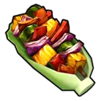

Kebab Vegetariano
Refeição · Tier 10 · Nível 31
Uma opção vegetariana para cobrir a porção diária. Até o prato é comestível!
Atributos
Ataque
130
Defesa
130
Economia
Valor
670.000
Tempo de fabricação
8h
XP do comerciante
60.500
Trabalhadores: Chef 25, Herborista 21, Feiticeiro 18
Receita


Marcos do projeto
6
Tempo de fabricação -20%
16
-1 Erva-doce
28
Valor +25%
45
Desbloqueia projeto: Lámen de Luxo
70
Chance de qualidade +1